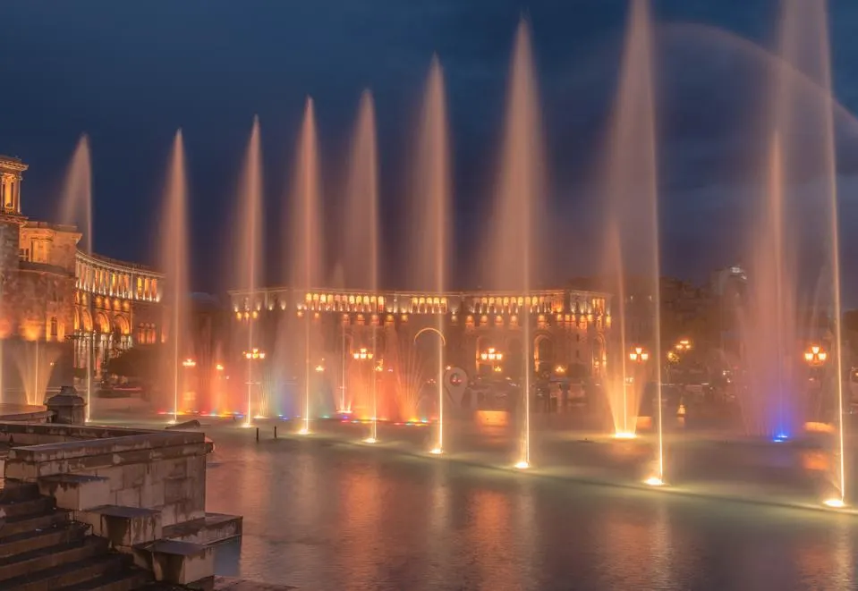

Why Yerevan?
Yerevan, a jewel for travel, food and wine
Yerevan, Armenia, is generally a safe, friendly and vibrant city with attractive architecture and rich history. Nicknamed the ‘pink city’ because of the color of volcanic tufa rock from which many buildings are constructed, this is a city where strolling allows you to see plenty.
